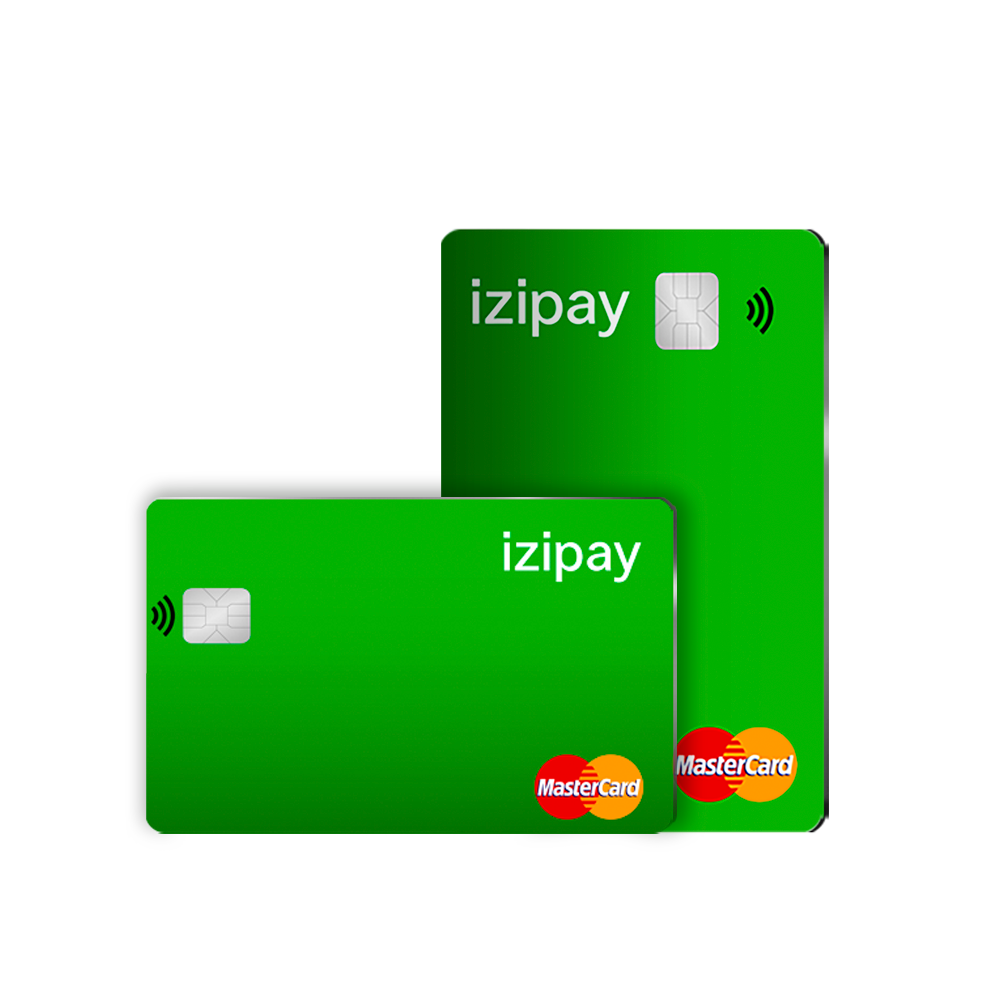

- Usabilidad Global: Paga en cualquier lugar donde se acepte VISA/MasterCard, ya sea a nivel local o en el extranjero.
- Retiros en Cajeros Automáticos: Retira moneda fiduciaria directamente desde tu billetera cripto en cajeros compatibles en todo el mundo.
- Conversión Automática: No se necesitan conversiones previas: tu cripto se convierte automáticamente a fiat en el momento de la compra o retiro.
- Duradera y Segura: Una tarjeta física de alta calidad, respaldada por avanzados sistemas de prevención de fraude.
- Recarga Fácil: Recarga tu tarjeta con cripto en cualquier momento a través de tu cuenta IZI Pay.